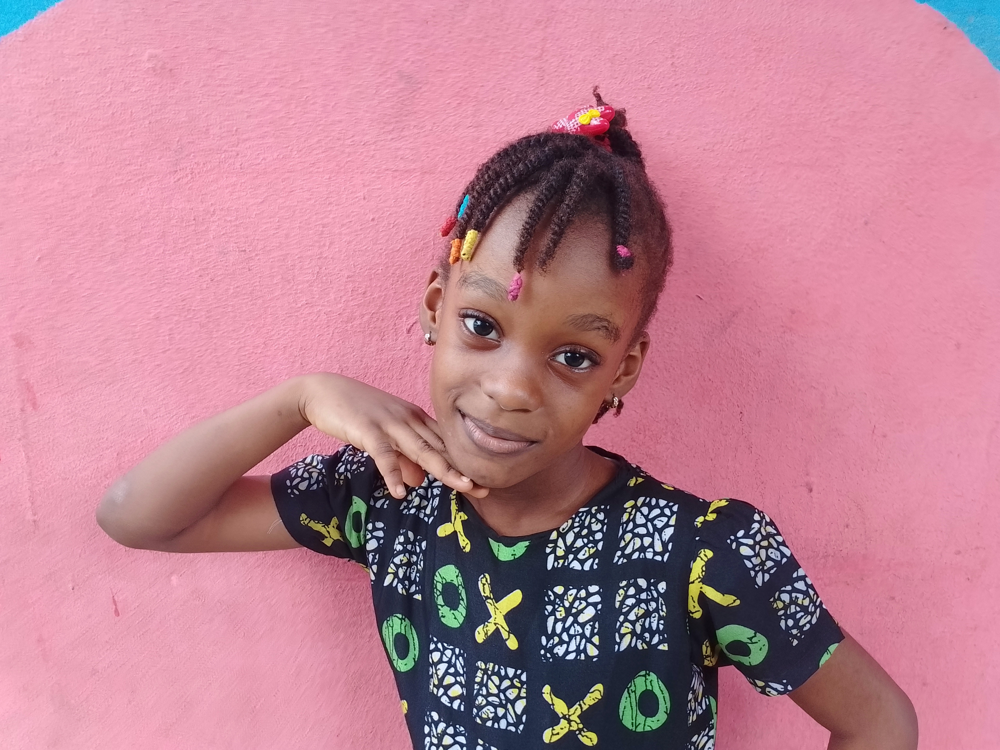
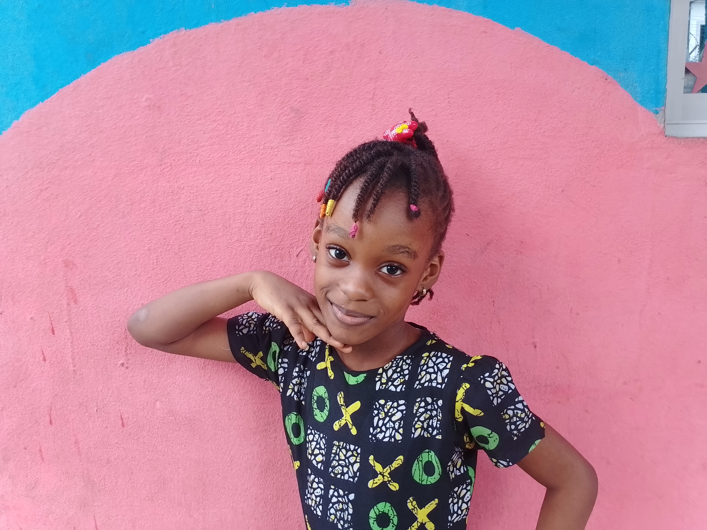
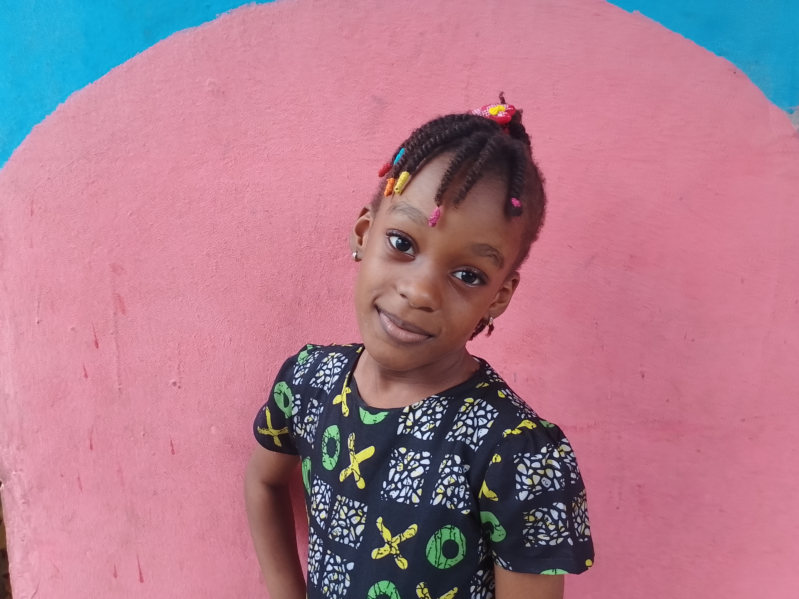
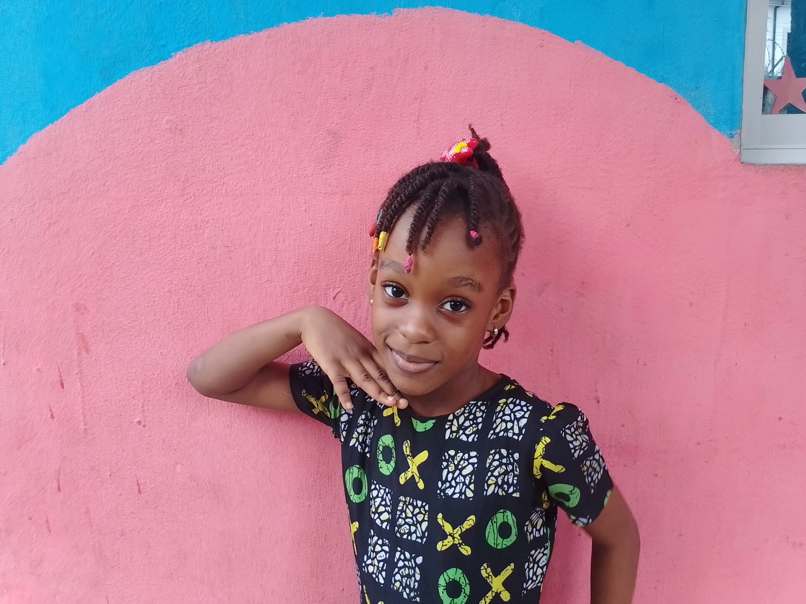

Teacher: Jaden Idara Brown (Age 6 | Basic One at Famous Vine Montessori School)




As your teacher, I want to help everyone stay sparkling clean! Remember these rules:
Let's travel back in time to learn about history!